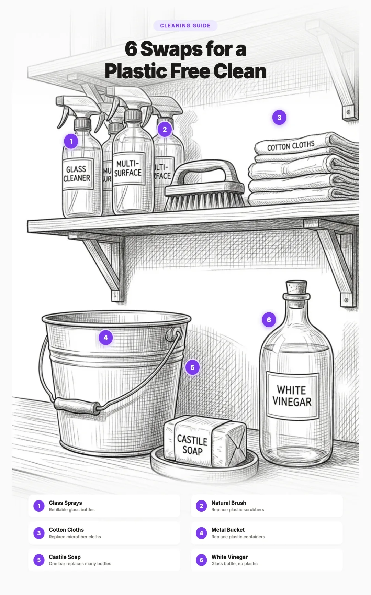

How to Reduce Microplastics in Cleaning Products: A Complete Guide (2026)
Your cleaning routine is one of the most overlooked sources of microplastic pollution in your home. Most cleaning products come in plastic bottles, contain synthetic ingredients derived from petrochemicals, and rely on tools like sponges and brushes made entirely from plastic. Every time you scrub a dish, mop the floor, or run a load of laundry, tiny plastic particles wash down the drain and enter waterways.
The good news is that switching to plastic free cleaning is straightforward and often cheaper than conventional products. This guide covers every category of cleaning in your home, from dish soap to floor care, with specific alternatives that actually work.

1. The Hidden Plastic in Your Cleaning Routine
Take a look under your kitchen sink. Count the plastic bottles. Now open the cabinet where you keep sponges, brushes, and cleaning cloths. Almost everything there is made from plastic or packaged in it.
Here is where plastic hides in a typical cleaning routine:
- Bottles and packaging. Dish soap, laundry detergent, all purpose spray, glass cleaner, bathroom cleaner, floor cleaner. Nearly all come in plastic containers. The average American household purchases 15 to 20 plastic cleaning product bottles per year.
- Synthetic surfactants. Many cleaning products contain surfactants derived from petrochemicals. While these do not leave visible plastic behind, they are part of the same petroleum based chemical system.
- Plastic sponges. Conventional dish sponges are made from polyurethane foam. They shed microplastic fibers with every use, sending particles directly into your sink drain.
- Synthetic cleaning cloths. Microfiber cloths, while effective, are made from polyester and polyamide (nylon). They release microplastic fibers during use and washing.
- Laundry detergent pods. The dissolvable film on detergent pods is polyvinyl alcohol (PVA), a synthetic polymer that may not fully biodegrade during wastewater treatment.
- Plastic brush handles and bristles. Most dish brushes, scrub brushes, and toilet brushes are 100% plastic.
- Single use cleaning pads. Swiffer pads, disposable wipes, and Magic Erasers are all made from plastic materials.
The cumulative impact is significant. A 2023 study published in Environmental Science & Technology found that household cleaning activities contribute an estimated 3,000 to 13,000 microplastic particles per household per day to wastewater. That is over a million particles per year, just from cleaning.
Estimates based on published research including Napper & Thompson (2016), Hernandez et al. (2017), and Hartline et al. (2016). Laundry figures represent a single wash cycle with synthetic garments.
2. Dish Soap and Dishwashing
Dishwashing is the most frequent cleaning task in most homes, which means it is also the most frequent source of cleaning related microplastics. The problem comes from three sources: the soap bottle, the soap formula, and the tools you scrub with.
The Problem with Conventional Dish Soap
Standard dish soap comes in a plastic bottle that will outlive you. The soap itself often contains synthetic surfactants like sodium laureth sulfate, synthetic fragrance, and artificial colorants. While these chemicals are not microplastics themselves, they contribute to the broader petrochemical footprint of your cleaning routine.
Then there is the sponge. A standard polyurethane dish sponge releases an estimated 6,000 to 10,000 microplastic particles every time you use it. Those particles go straight down the drain, through wastewater treatment (which catches some but not all), and into rivers and oceans.
Plastic Free Dish Soap Alternatives
Solid dish soap bars are the simplest swap. They come with zero plastic packaging, last 2 to 4 months with daily use, and work just as well as liquid soap for everyday dishwashing. You rub your wet brush or sponge across the bar to load it with soap, then scrub as usual.
- No Tox Life Dish Washing Block ($12 to $15). A large, concentrated block that lasts 2 to 6 months depending on use. Vegan, palm oil free, packaged in a cardboard box. One of the most popular plastic free dish soap options.
- Bestowed Essentials Solid Dish Soap (available at bestowedessentials.com) ($8 to $10). A smaller bar that still lasts 1 to 3 months. Made with coconut oil and essential oils. Comes in compostable packaging.
- EcoRoots Dish Soap Bar ($8 to $12). Another solid option with natural ingredients and zero waste packaging.
Plastic Free Dishwashing Tools
| Conventional Tool | Problem | Plastic Free Alternative | Lifespan |
|---|---|---|---|
| Polyurethane sponge | Sheds 6K to 10K microplastics per use | Natural cellulose sponge | 4 to 8 weeks |
| Plastic scrub pad | Nylon or polyester fibers | Coconut coir scrubber | 2 to 4 months |
| Plastic dish brush | Plastic handle and bristles | Wooden brush with sisal bristles | 3 to 6 months |
| Paper towels | Single use, often wrapped in plastic | Swedish dishcloth | 6 to 12 months |
| Plastic bottle brush | All plastic construction | Wooden bottle brush with natural bristles | 6 to 12 months |
Swedish dishcloths ($10 to $15 for a pack of 5) deserve special mention. Made from cellulose and cotton, they replace both paper towels and sponges. They absorb 15 to 20 times their weight in water, can be washed hundreds of times, and compost completely at end of life. A single Swedish dishcloth replaces approximately 17 rolls of paper towels.
3. Laundry Detergent and Microfiber Pollution
Laundry is the single largest source of microplastic pollution from any household activity. A single wash cycle with synthetic clothing can release 700,000 microplastic fibers into the wastewater. The detergent you use and how you wash both matter.
The Problem with Liquid Detergent
Liquid laundry detergent typically comes in a large plastic jug that is difficult to recycle even where recycling infrastructure exists. The formulas often contain synthetic surfactants, optical brighteners, synthetic fragrances, and preservatives. After a single use, the jug becomes waste.
The Problem with Laundry Pods
Laundry pods are wrapped in a film made of polyvinyl alcohol (PVA). The industry markets PVA as "water soluble" and "biodegradable," but a 2021 study by researchers at Arizona State University found that approximately 75% of PVA from detergent pods survives wastewater treatment and enters the environment. The film dissolves in your washing machine but does not fully break down during water treatment.
This means every time you toss a pod into the washing machine, most of that plastic film ends up in rivers, lakes, and oceans. Given that American households use an estimated 30 billion pods per year, the cumulative impact is substantial.
Better Detergent Alternatives
- Earth Breeze Laundry Sheets ($15 for 60 loads). Pre measured detergent sheets that dissolve completely in water. They come in a slim cardboard envelope, not a plastic jug. No PVA film. Effective in hot or cold water.
- Tru Earth Eco Strips ($16 for 64 loads). Similar to Earth Breeze. Ultra concentrated strips in a small cardboard package. Paraben free, phosphate free.
- Powder detergent in a cardboard box. Old fashioned powder detergent in a cardboard box (like Nellie's or Dropps) eliminates plastic packaging entirely. Powder detergent also tends to contain fewer synthetic additives than liquid formulas.
- Soap nuts. Dried berries from the Sapindus tree contain natural saponin, a surfactant. You toss 4 to 5 shells in a cotton bag and add it to the wash. They work best in warm water and can be reused 5 to 10 times before composting. They are effective for lightly soiled loads but may not handle heavy stains.
Catching Microfibers in the Wash
Even if you switch to a plastic free detergent, your synthetic clothes (polyester, nylon, acrylic) will still shed microfibers every time they are washed. Two products can help:
- Guppyfriend Wash Bag ($35). A specially designed mesh bag that catches microfibers shed during washing. Independent testing shows it captures approximately 54% of microfibers. You put synthetic garments inside the bag before washing, then remove the collected fibers and dispose of them in the trash (not down the drain).
- Cora Ball (available at coraball.com) ($38). A ball that tumbles in the wash and catches microfibers, inspired by the way coral filters ocean water. Independent testing shows it catches about 26% of microfibers. Less effective than the Guppyfriend but easier to use since you just toss it in the machine.
- Wash cold. Hot water increases fiber shedding significantly.
- Use shorter cycles. Less agitation means less shedding.
- Fill the machine. A full load creates less friction between garments than a partial load.
- Air dry when possible. Dryers cause additional fiber shedding through heat and tumbling.
- Buy natural fibers. Cotton, linen, wool, and hemp do not shed plastic microfibers. Over time, replacing synthetic garments with natural fiber alternatives is the most effective long term solution.
4. All Purpose Cleaners and Sprays
The all purpose cleaner is probably the most used product in your cleaning arsenal. It is also one of the easiest to replace. Most commercial all purpose cleaners are about 90% water, packaged in a plastic spray bottle, with synthetic fragrance and a handful of surfactants. You are essentially buying scented water in plastic.
Option 1: Concentrated Cleaning Tablets
Brands like Blueland ($12 to $16 for a starter set) sell concentrated cleaning tablets that you dissolve in water at home. You buy one glass or silicone spray bottle once, then drop a tablet into water to make a fresh batch of cleaner. This eliminates the need to buy a new plastic bottle every time you run out.
Blueland offers tablets for all purpose cleaning, bathroom, and glass. The tablets are smaller than a coin, ship in paper packaging, and each one makes a full bottle of cleaner. The economics work out too: refill tablets cost about $2 each compared to $4 to $6 for a new bottle of conventional cleaner.
Option 2: DIY All Purpose Cleaner
The simplest and cheapest solution is making your own. White vinegar is an effective cleaner and disinfectant that kills many common household bacteria including E. coli and Salmonella. Combined with water, it handles most everyday cleaning tasks.
- 1 part white vinegar
- 1 part water
- 10 to 15 drops essential oil (optional, for scent: lemon, tea tree, or lavender)
Mix in a glass spray bottle. Works on countertops, appliances, sinks, and most hard surfaces. Do not use on natural stone (marble, granite) as the acid in vinegar can etch the surface. For stone surfaces, use a solution of castile soap and water instead.
Option 3: Refill Stations
Many natural grocery stores and co ops now offer cleaning product refill stations where you bring your own container and fill it with all purpose cleaner, dish soap, or laundry detergent. This eliminates single use plastic packaging entirely. Check stores like Whole Foods, local co ops, and zero waste shops in your area.
5. Bathroom Cleaners
Bathrooms are a cleaning product hotspot. Most people keep separate products for the toilet, the shower/tub, the mirror, and the sink. That means multiple plastic bottles with multiple chemical formulas, most of which can be replaced with a few simple ingredients.
Toilet Cleaner
Conventional toilet bowl cleaners come in thick plastic bottles with angled necks and contain harsh chemicals like hydrochloric acid or sodium hypochlorite. For routine cleaning, a much simpler approach works just as well:
- Baking soda + vinegar. Sprinkle 1/2 cup of baking soda into the bowl, add 1 cup of white vinegar, let it fizz for 10 minutes, then scrub with a brush. This handles routine cleaning and light stains.
- For harder stains, make a paste of baking soda and water, apply it to the stain, and let it sit for 30 minutes before scrubbing. For mineral deposits and rings, citric acid powder dissolved in water is highly effective.
For the toilet brush itself, look for wooden handled toilet brushes with replaceable heads. Brands like Eco Living and Redecker make toilet brushes with FSC certified wood handles and plant fiber bristles (tampico or sisal). When the bristles wear out, you replace only the head, not the entire brush.
Tile, Grout, and Shower Cleaner
Castile soap is the workhorse here. A few drops of liquid castile soap (like Dr. Bronner's, which comes in a recyclable plastic bottle or in bar form) mixed with water in a spray bottle cleans tile, shower glass, and countertops effectively. For grout, make a paste of baking soda and water, apply it to the grout lines, let it sit for 15 minutes, then scrub with a stiff natural bristle brush.
For soap scum buildup, straight white vinegar in a spray bottle works well. Spray, let it sit for 5 to 10 minutes, then wipe. For heavy buildup, spray vinegar, sprinkle baking soda on top, let the fizzing reaction work, then scrub.
Glass and Mirror Cleaner
Commercial glass cleaners are essentially water, isopropyl alcohol, and ammonia in a plastic bottle. A simpler solution:
- 1 part white vinegar
- 1 part water
- Spray on glass, wipe with a cotton cloth or newspaper
This produces a streak free finish identical to commercial products. For extra shine, add a tablespoon of rubbing alcohol to the mixture.
6. Floor Cleaning
Floor cleaning is another area where plastic has become the default. Disposable floor pads, plastic mop heads, and chemical floor cleaners in plastic bottles dominate the market. Swiffer alone sells billions of single use pads per year, each one made from polyester and polypropylene that goes straight to landfill.
The Problem with Disposable Floor Pads
Swiffer pads and similar disposable floor wipes are made from synthetic materials including polyester, polypropylene, and polyethylene terephthalate (PET). Each pad is used once and thrown away. The cleaning solution that comes in Swiffer bottles contains propylene glycol and synthetic fragrance. It is a wasteful system designed to sell you refills forever.
Plastic Free Floor Cleaning Alternatives
- Cotton string mop. The classic string mop with a wooden handle and cotton head. The cotton head is machine washable and can be used hundreds of times before it needs to be replaced. When it finally wears out, the cotton is compostable and the wood handle can be reused.
- Flat mop with reusable cotton pads. If you prefer the flat mop style, look for one with a wooden or aluminum handle and washable cotton or terry cloth pads. Several brands now sell reusable mop pad systems that fit standard flat mop frames.
- Simple cleaning solution. For most hard floors (tile, wood, laminate, vinyl), a bucket of warm water with a few drops of castile soap is all you need. For wood floors specifically, use a very dilute solution to avoid excess moisture. For a deeper clean, add 1/4 cup of white vinegar per gallon of water.
7. Sponges, Brushes, and Cleaning Tools
The tools you clean with can be a bigger source of microplastics than the cleaning products themselves. A polyurethane sponge is essentially a block of plastic foam that you abrade against surfaces, sending thousands of tiny particles down the drain with every use.
Why Plastic Sponges Are a Problem
Conventional kitchen sponges are made from polyurethane foam, often with a polyester scrubbing pad glued on one side. Research published in Scientific Reports (2022) found that kitchen sponges harbor bacteria (which you may already know) but also shed significant quantities of microplastic particles during normal use. The abrasive action of scrubbing accelerates the breakdown of the foam, releasing microplastics into your sink water and ultimately into waterways.
Magic Erasers (melamine foam sponges) are even more problematic. Melamine is a thermosetting plastic that works by micro abrading surfaces. It is essentially designed to disintegrate as you use it, sending melamine particles down the drain.
Natural Alternatives That Actually Work
- Natural cellulose sponges. Made from wood pulp, these sponges are absorbent, durable, and fully compostable. They do not shed microplastics. Look for 100% cellulose sponges without added polyester scrub pads. They last 4 to 8 weeks with regular use.
- Loofah. The dried interior of the luffa gourd makes an excellent kitchen scrubber. It is naturally abrasive, biodegradable, and surprisingly durable. Cut a loofah into sections and use them as you would a sponge. Replace every 3 to 4 weeks.
- Coconut coir scrubbers ($6 to $10 for a set). Made from the fibrous husk of coconuts, these scrubbers are naturally abrasive and excellent for pots, pans, and stubborn residue. They last 2 to 4 months and compost completely.
- Wooden dish brushes with plant fiber bristles ($8 to $14). Beechwood or bamboo handles with sisal or tampico (agave) bristles. Some brands offer replaceable heads so you only replace the bristles, not the handle. Sisal bristles are stiff and good for heavy scrubbing. Tampico bristles are softer and better for general washing.
- Swedish dishcloths. As mentioned in the dishwashing section, these cellulose and cotton cloths replace both sponges and paper towels. They can be sanitized in the dishwasher or microwave, washed hundreds of times, and composted at end of life.
8. The Packaging Problem
Even if the cleaning product inside is perfectly natural, the bottle it comes in is almost always plastic. And "recyclable" plastic is largely a myth: only about 5 to 6% of plastic waste in the United States is actually recycled, according to the EPA. The rest goes to landfill, is incinerated, or leaks into the environment.
This means the 15 to 20 plastic cleaning product bottles your household generates each year are overwhelmingly becoming permanent pollution, regardless of whether you put them in the recycling bin.
Strategies to Reduce Cleaning Product Packaging
- Concentrated refill tablets. Brands like Blueland, Dropps, and Cleancult sell concentrated tablets or pods that dissolve in water. You buy one reusable bottle and refill it indefinitely. This reduces plastic waste by 80 to 90% compared to buying new bottles.
- Refill stations. Many natural grocery stores, co ops, and zero waste shops offer bulk cleaning product refill stations. Bring your own container and fill it with dish soap, all purpose cleaner, or laundry detergent.
- Buy in bulk. If you do buy liquid products, a single large container uses less plastic per unit of product than many small bottles. A gallon jug of castile soap, for example, can make months of cleaning solution for your entire house.
- Make your own. Vinegar, baking soda, castile soap, and essential oils can replace nearly every commercial cleaning product. The ingredients come in glass bottles (vinegar), paper boxes (baking soda), or minimal packaging.
- Choose glass or aluminum packaging. Some brands now sell cleaning concentrates in glass or aluminum containers, which are more genuinely recyclable than plastic.
9. What About "Eco" Cleaning Brands?
The green cleaning market has exploded in recent years, but not all "eco friendly" brands are created equal. Many use green imagery, plant based claims, and words like "natural" on their labels while still selling products in plastic bottles with synthetic ingredients.
What to Look For
- Full ingredient transparency. Brands that list every ingredient on their label or website are generally more trustworthy than those that hide behind vague terms like "plant derived surfactants" or "natural fragrance." Under U.S. law, cleaning product manufacturers are not required to disclose all ingredients, so voluntary transparency is a positive signal.
- Packaging material. Does the brand actually address packaging? A "natural" cleaner in a virgin plastic bottle is only solving half the problem. Look for refillable systems, concentrated formulas, or glass/aluminum packaging.
- Third party certifications. Two certifications carry meaningful weight:
- EPA Safer Choice. The EPA reviews every ingredient in the product against strict human health and environmental criteria. Products with this label have been independently verified as safer.
- EWG Verified. The Environmental Working Group evaluates products against their database of chemical safety research. EWG Verified products must disclose all ingredients and meet strict health standards.
- Avoid "greenwashing" buzzwords. Terms like "eco," "green," "natural," and "plant based" have no legal definition for cleaning products. They can be used by anyone. Focus on specific, verifiable claims instead.
Brands That Get It Right
A few brands stand out for addressing both the formula and the packaging:
- Blueland uses concentrated tablets with a reusable bottle system. Formulas are EPA Safer Choice certified.
- Dropps sells laundry, dish, and cleaning pods in compostable packaging (though the pods themselves still use PVA film, which is a tradeoff).
- Branch Basics sells a single concentrate that dilutes into multiple cleaning products, significantly reducing packaging. The concentrate comes in a plastic bottle, but one bottle replaces many.
- No Tox Life makes solid dish soap blocks and other plastic free cleaning products with minimal or zero plastic packaging.
10. Your Plastic Free Cleaning Action Plan
Switching everything at once is unnecessary and wasteful. Here are the highest impact changes, ranked by the amount of microplastic pollution they eliminate:
- Replace your plastic sponge with a cellulose sponge or loofah. This is the cheapest, easiest swap and eliminates thousands of microplastic particles per day from going down your drain. Cost: $2 to $5.
- Switch to laundry sheets or powder detergent in cardboard. Eliminates plastic jugs and PVA film from pods. Cost: $15 to $16 for 60+ loads.
- Use a Guppyfriend bag or Cora Ball for laundry. Catches a significant percentage of the microfibers your synthetic clothes shed during washing. Cost: $35 to $38 (one time purchase).
- Replace dish soap with a solid bar. Eliminates the most frequently purchased plastic cleaning bottle in most homes. Cost: $8 to $15.
- Make your own all purpose cleaner. A glass spray bottle with vinegar and water replaces multiple plastic bottles of commercial cleaner. Cost: under $5.
- Switch to wooden dish brushes and natural scrubbers. Eliminates microplastic shedding from plastic bristles and scrub pads. Cost: $6 to $14.
- Replace disposable floor pads with reusable cotton pads. Eliminates single use polyester pads from your routine. Cost: $10 to $20 for a set of reusable pads.
- Use castile soap and baking soda for bathroom cleaning. One bottle of concentrated castile soap and a box of baking soda replace 3 to 4 specialized plastic bottles. Cost: under $15.
The total cost to transition your cleaning routine is approximately $100 to $150 upfront. After that, refills are cheaper than conventional products because you are buying concentrated ingredients instead of pre mixed solutions in new plastic bottles. Most households save money within 3 to 6 months of making the switch.
Looking for more ways to reduce plastic in your home? Visit our store for curated recommendations on kitchen, bathroom, and cleaning essentials.
Frequently Asked Questions
Yes. Conventional cleaning sponges are made from polyurethane foam or melamine (Magic Erasers), and they shed microplastic particles with every use. These particles go directly down the drain and into waterways. Alternatives like natural cellulose sponges, loofah, and coconut coir scrubbers do not release microplastics.
Laundry pods use a polyvinyl alcohol (PVA) film casing that is marketed as biodegradable. However, research suggests that 75% of PVA from detergent pods may not fully dissolve or biodegrade during wastewater treatment. The film can persist in waterways. Laundry sheets or powder detergent in cardboard packaging are better alternatives.
Solid dish soap bars are the best plastic free option. Brands like No Tox Life, Bestowed Essentials, and EcoRoots make concentrated dish soap blocks that last for months, come in minimal or zero plastic packaging, and work well for everyday dishwashing. Pair them with a wooden dish brush for a fully plastic free setup.
For most household cleaning tasks, yes. White vinegar is an effective disinfectant that kills many common bacteria and works well on glass, countertops, and bathroom surfaces. Baking soda is a mild abrasive that handles scrubbing, deodorizing, and stain removal. Together they cover about 80% of household cleaning needs. For heavy disinfection, castile soap or hydrogen peroxide can fill the gaps.
Yes. Independent testing shows Guppyfriend wash bags capture about 54% of microfibers shed during a wash cycle. The Cora Ball, which tumbles freely in the drum, catches about 26%. Neither solution captures everything, but using one or both significantly reduces the microfibers that reach waterways. Washing on cold and using shorter cycles also reduces shedding.
It depends. Many brands market as eco friendly but still use plastic bottles and may contain synthetic surfactants. Look for specific indicators: plastic free or refillable packaging, full ingredient transparency, and third party certifications like EPA Safer Choice or EWG Verified. A truly better product addresses both the formula inside and the packaging outside.
Related Articles
- How to Remove Microplastics from Drinking Water (2026)
Learn which water filters actually remove microplastics and which ones are marketing hype. - Best Plastic Free Food Storage Containers (2026)
Upgrade your kitchen with glass, stainless steel, and silicone storage that keeps food safe. - How to Avoid BPA and Phthalates in Everyday Products (2026)
Cleaning products can contain phthalates in synthetic fragrance. Here is how to avoid them room by room. - Cast Iron vs Stainless Steel vs Ceramic Cookware (2026)
While you are upgrading your cleaning routine, make sure your cookware is plastic and PFAS free too.